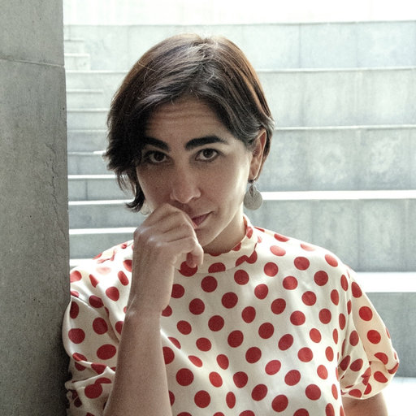
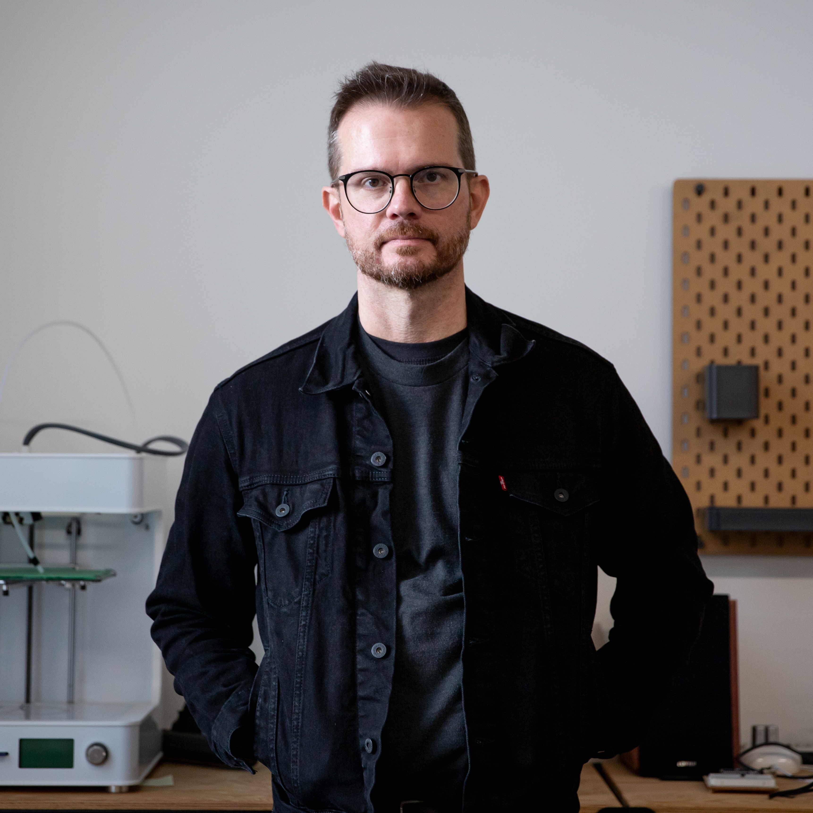
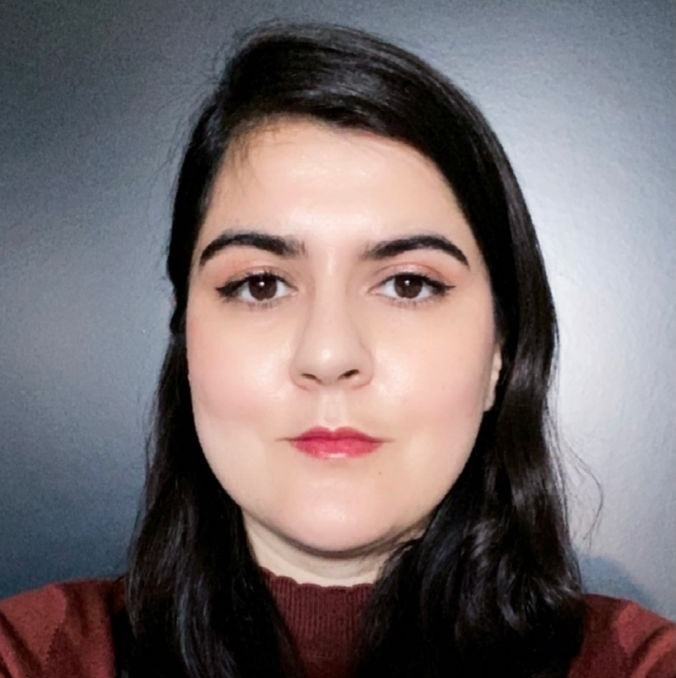

The International Programs & Collaborations Office at OCAD University presents International Lecture Series: Beyond Bias. This international lecture series brings together academics and researchers from around the world to share their experiences, methodologies, and scholarly approaches to fostering inclusive collaborations across borders. Focusing on the intersection of global education and creative research, the series aims to provide valuable insights on how to collaborate effectively with students and professors from diverse cultural backgrounds.
Each lecture will feature expert speakers who will share their personal journeys, research strategies, and academic examples of successful international collaborations. Emphasizing cultural awareness, the series will explore how to navigate biases, promote equity, equality, and social justice, and go beyond preconceptions to build a more inclusive and respectful global creative community.
Associate Professor, Concordia University, Montreal CA.
Cambre is an Argentine/Canadian scholar who explores vernacular visual expression asking: How do people produce and direct the visual space. How is the image a doing? What are the social and cultural work/ings of images? – Ideas explored in her latest article, “The Atopic Image” (Visual Studies June 2023: 38:2, 199-202). Lately, her research focuses on visual processes of legitimation, representation of online sharing, the visual politics of identity, and polymedia literacies. She is author of The Semiotics of Che Guevara: Affective gateways (2015) and co-authored The Filtered Face: Toward a Sociology of Selfies (Routledge, 2023). Cambre co-edited the collections Visual Pedagogies: Concepts, Cases & Practices (2022) and Representation/Presentation/Embodiment (2020).
Lecture: Contesting the colonial eye: “Burning the Mona Lisa”
This workshop/discussion will present ideas to work through and think about everyday resistant or subversive interactions to the colonial difference taking into consideration the affordances of international collaboration. Contesting the coloniality of how our subjectivities are being produced through capitalistic culture, I follow Argentine feminist scholar Maria Lugones in looking at “the liberation, as both adaptive and tension between subjectification and active subjectivity, that minimal sense of agency of the modern subject” (Lugones 2003).

Dr. Isabel Machado
Lecturer. Institute for Gender, Race, Sexuality and Social Justice. Faculty of Arts. University of British Columbia.
Isabel Machado is a Brazilian cultural historian whose work often crosses national and disciplinary boundaries. She specializes in the fields of Gender and Sexuality Studies and Celebration Studies. She serves as co-editor-in-chief for the Journal of Festival Studies and as a host for the New Books Network Podcast and is currently a Lecturer at the University of British Columbia’s Institute for Gender, Race, Sexuality and Social Justice.
Lecture: Fostering Inclusive Communities in the Classroom through Project-Driven Courses.
Isabel Machado will discuss the challenges and positive results of building inclusive classroom communities through public-facing collaborative projects by applying her research methodology to her course design. “Co-documenting” is the process of establishing partnerships and collaborations so that the research is relevant and accessible to the people involved. It is also an attempt to dismantle epistemic hierarchies and the separation between research and academic “communities.” An important element of this process is thinking about how different people can produce and share knowledges together, even when they come from diverse backgrounds and are dealing with delicate subjects. Building a project together fosters collaboration and helps the students realize that everyone can make valuable contributions to our learning community(ies) while making theory more tangible, translatable, and shareable. Yet, this is not always a smooth experience as it also involves finding together ways to deal with fears and discomfort.

Daniel Wildberger
Assistant Professor of Interaction Design at Emily Carr University of Art and Design
Born in Brazil, Daniel Wildberger is a multi-disciplinary designer and educator with a focus on dynamic media, interactive design, motion graphics, experience design, and visual communication. He holds a B.A. in Communication Design and Advertising from Universidade Católica do Salvador, as well as an MA and MFA from the University of Iowa, USA.
Lecture: Branches: Weaving Stories in Design and Education
This presentation is a collaboration between Daniel Wildberger and Erik Páez, sparked by a central question: How might a former student and teacher co-design a talk that weaves their histories in design and education together? To visualize their intertwined journeys, Daniel and Erik investigate the shifting dynamics of teacher-student collaborations, exploring these narratives through multiple lenses: over time (spanning eight years), across different spaces (Mexico, USA, Brazil, and Canada), and through evolving roles. Through the creation of this metapresentation, they aim to foster a space for mutual reflection, where their individual contributions coalesce into the fabric of a collective knowledge.

Dr. Shima Rezaei Rashnoodi
Senior researcher/ lecturer at academy of AI, Games and Media, Breda University of Applied Sciences
Shima Rezaei Rashnoodi is a senior researcher and lecturer at Breda University of Applied Sciences in the Netherlands, specializing in immersive media particularly spatial experiences in Virtual Reality (VR) and empathy. With a background in architecture and participatory research, she has worked on projects around home in displacement and inclusive design.
Lecture: Being There: A Virtual Reality Museum of Migrant Women
This presentation introduces Being There, a virtual reality museum that highlights the stories of migrant women from Latin America, created through a COIL project. Students from BUas (The Netherlands) and UDEM (Mexico) worked together in a multidisciplinary effort to design an immersive VR experience, partnering with the Lamentos Escuchados Migration Center in Monterrey, Mexico. The project brings to life the personal journeys of migrant women as they travel through Mexico toward the United States, focusing on their challenges, aspirations, and their concept of “home.” By digitally portraying a mother and child, the VR museum aims to foster empathy and raise awareness about the realities migrant women face. The presentation will explore the international collaboration, creative process, challenges encountered, and the project’s broader goal of building understanding and empathy for migrant women.